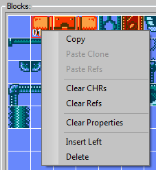

MAPeD Quick Guide
Contents:
The MAPeD is a tool for building a game levels for NES games.
The main features are:
tiles drawing/composing tools
building a game map using 2x2 or/and 4x4 tiles
data optimization tool
several game maps in one project
detachable UI
entities editor
tile properties editing ( can be used as collisions data etc )
palette per 1x1 tile support ( MMC5 )
import tiles from images
export to CA65/NESasm with wide variety of options:
2x2/4x4 tiles
column/row data order
RLE compression
modes: multidirectional / bidirectional scrolling, static screens switching
attributes per 1x1/2x2 tile
tiles properties per 1x1/2x2 tile
level topology options
entities
built-in Python script editor for writing custom data export scripts
export to SjASMPlus ( ZX Spectrum assembler )
Main Tab → Tiles Tab
Click Menu → Tiles / Blocks to see all available hotkeys for this section.
CHR – 1x1 tile
Block – 2x2 tile
Tile – 4x4 tile
The “Block Editor” allows you to draw graphics and build blocks from CHR data.
The main functions are:
Edit modes switching:
There are two edit modes available: “Select CHRs” and “Draw”.
To switch between the modes you can press the “Select” or “Draw” button or click the “Select CHRs” or “Draw” item in the context menu.
The “Select CHRs” mode allows to assign CHRs to a selected block from CHR bank. To do that, you should select one of four CHR slots in the “Block Editor” field and click on a CHR in the CHR bank. All assigned CHRs will be highlighted in the CHR bank.
The “Draw” mode allows to draw pixels. When it's active, select a color and draw using a left mouse button.
Transformations:
There are three types of transformations: vertical flipping, horizontal flipping and clockwise rotation. Press appropriate buttons to perform the actions.
CHRs data reserving:
There are two ways to assign CHRs to a block. The first one, you can do that manually like described above. The second one, you can press the “Reserve CHRs” button for automatic CHRs assignment. The nearest empty CHRs will be assigned to a selected block.
Block's property assignment:
You can assign an integer value from 0 to 15 to each block or to block's CHRs. For example, it can be used as collision data or for marking a static dangerous object that decreases health points etc.
By default a property will be assigned to whole block. To assign a property per CHR, you can click the “CHR” item in the context menu ( the “Property Id per” section ) or in the main menu → Blocks → Property Id per.
Graphics data updating:
When you make any changes to graphics content ( drawing, changing colors ) you must update all dependent content to see the result by pressing the “Update GFX” button.
The “Tile Editor” allows you to build tiles from blocks.
The main functions are:
Building a tile from blocks:
Select a tile, uncheck the “Locked” flag, click on one of the four block positions and assign a block to it by clicking on block from the “Blocks” list. It's useful when you have drawn blocks.
Blocks data reserving:
The second way to assign blocks to a tile, you can press the “Reserve Blocks” button for automatic blocks assignment. The nearest 4 empty blocks will be assigned to your tile. It's useful when you are going to draw a tile.

Copy: Copies a selected block.
Paste Clone: Makes a full copy with CHRs duplication in a CHR bank.
Paste Refs: The resulting copy shares the same CHRs as the source block.
Clear CHRs: Clears block's CHRs in a CHR bank.
Clear Refs: Resets CHRs indices to zero.
Insert Left: Inserts an empty block and shifts right the rest ones.
Delete: Deletes a selected block and shifts left the rest ones.

Copy: Copies a selected tile.
Paste: Pastes a copy to selected position.
Clear Refs: Resets block indices of a selected tile to zero.
Clear All Refs: Resets block indices of ALL tiles to zero.
Insert Left: Inserts an empty tile and shifts right the rest ones.
Delete: Deletes a selected tile and shifts left the rest ones.
View Type: It allows to show the additional information: graphics ( by default ), property Id numbers/colors on both tiles and blocks or tile numbers. It also affects on graphics in the screen editor.
Optimization: The operation allows to remove all unused CHRs, blocks, tiles and screens. You can select the data type(s) for optimization.
Main Tab → Tiles Tab
Menu → CHR Bank
The “CHR Bank” is a graphics data bank, which contains 1x1 tiles data ( NES: 256 tiles ).
 The
main functions are:
The
main functions are:
Data banks management:
Add a new bank ( the “Bank+” button ), delete an active bank ( the “Bank-” button ), make a copy of an active bank ( the “Copy” button ). Also you can switch between banks by selecting an appropriate bank from the “Banks” list.
CHR data transformations:
There are three types of transformations: vertical flipping, horizontal flipping and clockwise rotation. Press appropriate buttons to perform the actions. It also affects on blocks/tiles/screens.
CHR operations:
Copy: Copies a selected CHR.
Paste: Pastes a copy to selected position.
Fill With Color: Fills a selected position with an active color.
Insert Left: Inserts an empty CHR and shifts right the rest ones.
Delete: Deletes a selected CHR and shifts left the rest ones.
Main Tab → Tiles Tab
There are 4 user defined palettes ( 1, 2, 3, 4 ). Press Shift+1, 2, 3, 4 to switch between palettes and press Ctrl+1, 2, 3, 4 to switch between colors inside an active palette.
To assign a new color to an active palette, just select a color slot inside the palette and click on any color in the main palette.
NES: The leftmost color of each palette is a transparency color.
NES: Also you can enable MMC5 extended attributes mode. When enabled it allows to assign a palette per CHR. By default you can assign a palette per block only.
Press the “Bank+” button to create a new CHR bank data to work with.
Make sure that the “Select” button at the “Block Editor” box is pressed. So, now the block construction mode is enabled.
Click on any empty block in the “Blocks” list ( the first one usually is reserved for an empty space ). After that you can manually assign CHRs to the selected block by clicking on the block's CHR slot and a CHR in the CHR bank or press the “Reserve CHRs” button at the “Block Editor” box for automatic CHRs assignment.
Press the “Draw” button at the “Block Editor” box to switch to the drawing mode.
Select an active palette and a color.
Now you can draw pixels in the “Block Editor” field.
To assign blocks to a tile, click on any empty tile you want to work with.
Uncheck the “Locked” flag at the “Tile Editor” box. Now you can assign blocks to the selected tile.
Assign blocks to the tile like described above.
Press the “Update GFX” button to see the result of your work. After that, block/tile/screen/level data will be updated and you will see the changes.
When you have prepared your tiles/blocks you can build a game levels and screens.
Main Tab → Screens Tab
Menu → Screens → Editor
The “Screen Editor” is a tool that allows you to create a game screens using tiles and/or blocks. When you use blocks, the tile list will automatically fill up. And when it overflows, you need to optimize it to reduce the amount of unnecessary tiles created during a screen building process.
An image of each created screen will appear in the “Screens” list at the Layout Tab → Screens Tab.
 The
main functions are:
The
main functions are:
It shows a selected tile. Click on any place inside the red border of the screen area to place it on a screen.
Note: To simplify the process of working with tiles and blocks you can press the "Tiles/Blocks" button to display them in a separate window.
Screens Management:
You can create, copy and delete screens. Press the appropriate buttons for that.
Edit Modes Switching:
There are two modes available for screen editing.
The first one is the “Single” mode. It's enabled by default. You can't see adjacent screens and you can't navigate to them. It's convenient when your game map is completely located on one screen.
The second one is the “Layout” mode. In this mode you can see the adjacent screens and navigate to them by clicking on their visible parts. To enable the mode, you need to click on the “Layout” flag at the “Edit Modes” box. Then select an active layout and click on any of its screen. After that, the selected screen will appear in the screen editor window.
Layout Tab
Menu → Layout
The “Layout Editor” is a set of tools that allow you to create a game levels and edit / place entities.
The layout window contains the viewport where you can build your game levels and at the right side of the viewport you can see the options panel to manage a game levels.
Note: When the “Screens” tab is active, you can work with screens and can't work with entities and vice versa, you can't work with screens when the “Entities” tab is active.
Pan the viewport by a LEFT mouse button and scale it by a mouse wheel.
The main functions are:
The options panel:
It allows you to create, copy, delete your game levels, move them up/down in the level list, work with screen cells in a level. Also it allows you to control a visibility of a level items. Click the appropriate buttons and flags for that.
Each level represents a matrix of cells X*Y regardless of topology of your level. So, at first, when you start building a game level, you must create a matrix of screen cells which bounds your level.
The buttons to work with a screen cells matrix are:
- “+U” to add a row at the top of a cells matrix.
- “-U” to delete a row at the top of a cells matrix.
- “+D” to add a row at the bottom of a cells matrix.
- “-D” to delete a row at the bottom of a cells matrix.
- “+L” to add a column at the left side of a cells matrix.
- “-L” to delete a column at the left side of a cells matrix.
- “+R” to add a column at the right side of a cells matrix.
- “-R” to delete a column at the right side of a cells matrix.
The viewport context menu options:
Right-clicking in the viewport shows the context menu that you can see in the picture.
Click the “Delete Screen” item to delete a screen the cursor points to. You can delete screens when the “Screens” or “Entities” tab is active.
To delete an entity, you must select it. Open the “Entities” tab to do that. Make sure that the “Edit Instances” mode is enabled ( if no, press the appropriate button to enable ). Then click on an entity you want to delete, and after that you can delete it via the context menu.
Each game level must has a start screen. Click the “Set Start Screen Mark” item to mark a screen the cursor points to as a start one.
Also you can assign a property to a screen. It's a numeric value from 0 to 15. Click the “Set Screen Property” item to assign it.
When creating a level of static screens or bi- or unidirectional scroller level there may be cases when you don't need to go to an adjacent screen. Take a look at the picture with white arrows. This is an example of such case. There is an obstacle in the middle bottom part of the level. To make such level playable according to its topology, you can use adjacent screen masks which define the path you can go. To avoid ambiguity, you have to define the adjacent screen masks for each screen in your level. You can do that through the appropriate viewport context menu item. Each letter ( L/U/R/D ) means a valid direction you can go from the current screen.
You can delete all screen marks ( start screen / screen property / adjacent screen mask ) in an active level by clicking the main menu item → Layout → Delete All Screen Marks.


Layout Tab → Screens Tab
Menu → Screens
The screen list contains a set of images of created screens.
The main functions are:
The “Update Screens” button allows you to manually update all changes created during a tiles manipulation process. It becomes an active when some changes are done.
The “Auto” flag allows you to automatically update all changes when it's active.
Also you can see an active CHR bank index ( zero bank in the picture ).
By default you can see only the current CHR bank's screens. Click the “All Banks” flag to see all screens of all available CHR banks.
A screen name description:
In the picture you can see the following name – “B:0/S:0” it means a zero bank (B) and a zero screen (S).
To place a screen into a game level, just click on a screen image and click on a level's cell.
Click on any empty space inside the screen list to reset the screen selection.
Layout Tab → Entities Tab
Menu → Entities
The entity editor is designed for creating / editing entities, grouping by type and placement in a game level.
 The
main functions are:
The
main functions are:
Add/Delete/Rename of a group or a base entity*:
You can add, delete, rename an entities group, as well as base entities within the group. There are three ways to do that: using the context menu inside the tree view, the buttons at the right side of the tree view or via the main menu → Entities.
An entity editing:
Clicking on an entity in the tree view leads to show its parameters in the entity editor ( the “Active Entity” box ).
The editable parameters from top to bottom:
- UID: an unique identifier of a base entity;
- Properties of a base entity ( the properties are inherited by all instances )**;
- An instance property ( can be unique to all instances )**;
- A target entity UID ( each entity can refer to any other one by its UID ); press the “Target UID” button and click on any instance of an entity in the layout viewport to assign it as the target one;
- Width/Height of an entity;
- A pivot point ( an offset from the origin );
- An entity image; there are two ways to show an entity: as a color rectangle ( click on the color box near the “Bitmap” button to select a color ) or a bitmap image ( press the “Bitmap” button to load an image );
Work with a game level:
When the “Edit Entities” mode is active, you can place a current editable entity in a game level ( you can see the current edit mode at the left top corner of the layout viewport ). Just click on any screen cell with a screen image inside to put the entity in a screen.
If you want to edit an entity instance you need to switch to the “Edit Instances” mode by pressing the “Edit Instances -->” button. After that you can select your entity, move it using a left mouse button and edit its parameters in the entity editor.
You can delete all entity instances in an active level by clicking the main menu item → Layout → Delete All Entity Instances.
* Base entity is an entity created in the tree view control, an entity instance is the base entity placed in a game level.
** Properties are space separated decimal values.
Press the “Create” button at the right side of the layout viewport. After that you will see a screen cell inside the viewport.
Now you can create a screen cells matrix of your level.
After that you can fill out the matrix with screens from the screen list.
Then you can place entities and marks.
Click Menu → Load / Save to load or save a project file.
NES project file has a .mapednes extension.
Click Menu → Import to import data into your project.
There are four data formats available for import:
.sprednes CHR bank data
raw NES CHR data ( .bin or .chr )
BMP tiles data ( 4bpp ) *
Palette ( 192 bytes ) ( .plt )
* Imported images must be a multiple of 16 for blocks data and a multiple of 32 for tiles data.
Click Menu → Export to export data from your project.
There are five data formats available for export:
NES: CA65/NESasm ( .asm )
ZX Asm ( .zxa ) - SjASMPlus data for multidirectional scroller
Active tile/block set ( .bmp )
Active layout ( .png ) - just an image of an active layout without entities
Text ( .json ) - whole project data
Note: If you need your custom data format, you can write a Python script to export all you need. Press Alt+X to open a simple Python script editor.
The Python API you can find here './doc/MAPeD_Data_Export_Python_API.html'.
Copyright (c) 2019 0x8BitDev